College Scorecard
College Scorecard is a U.S. Department of Education tool for students, parents, and counselors to compare the cost and value of higher education institutions.
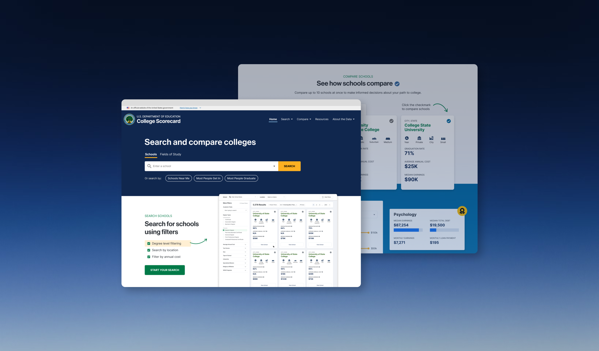
Overview & Impact
The Challenge
College Scorecard is a federal tool serving over 12 million annual users: students, parents, and counselors making critical higher education decisions. When I joined the project, the platform suffered from fundamental usability issues that prevented users from accessing vital comparison data and features.
The Department of Education tasked my team at RTI International with identifying these barriers through comprehensive user research and redesigning the experience to better serve students at every stage of their college search journey.
Impact at a Glance
+34%
Search engagement
-51%
Time to first action
-24%
Bounce rate
The Process
User Research & Discovery
I co-led the research strategy and conducted 18 of 24 user interview sessions with high school students and parents. Our methodology balanced federal compliance requirements (Paperwork Reduction Act) with deep user understanding through direct observation.
Research Questions
- Are users able to successfully use all of the features of Scorecard?
- Can users successfully interpret Scorecard data?
- What are participants' perceptions of the website overall?
- What would make the site more useful or easier to use?
Old College Scorecard Home Page
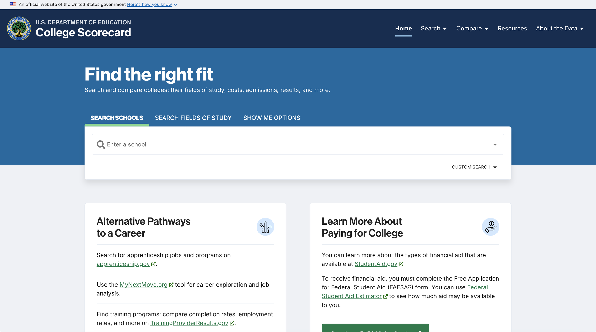
User Journey Map
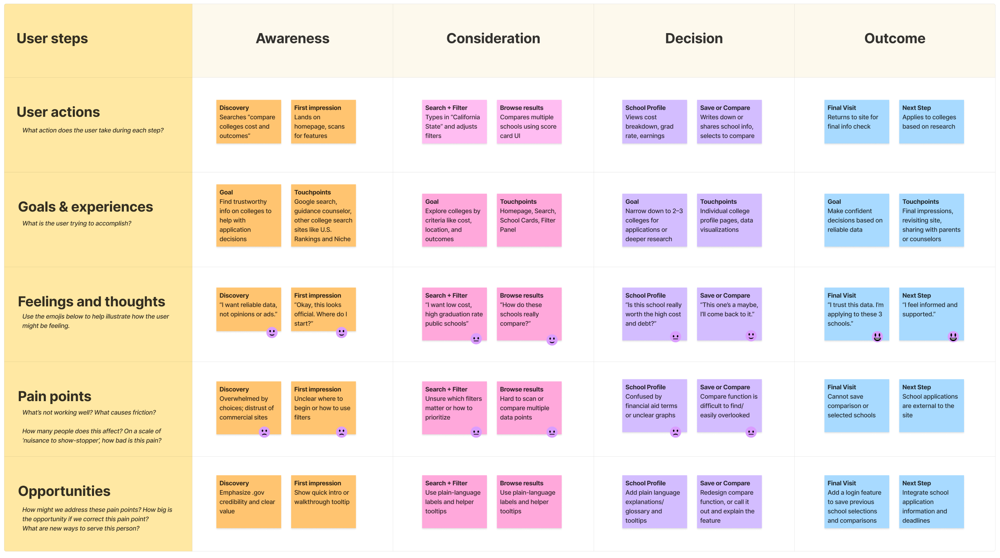
Methodology
We conducted sessions virtually on Zoom and they lasted approximately an hour. To comply with the Paperwork Reduction Act, research was conducted through direct observation. Participants were asked to interact with the website as if they had landed there on their own.
Participant Demographics
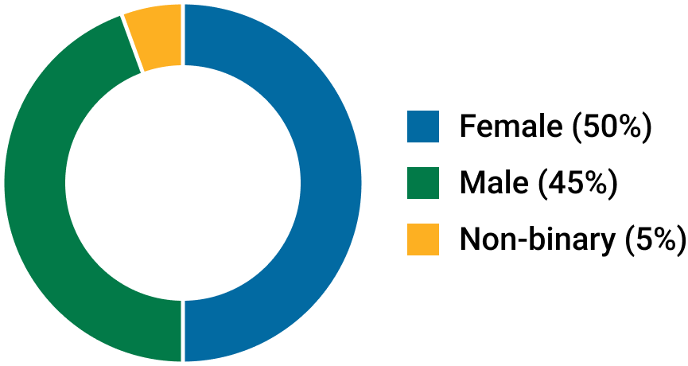
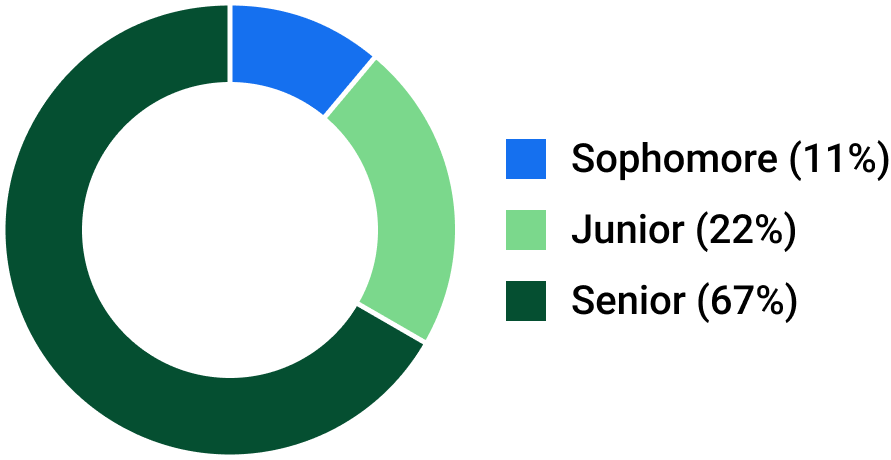
Actionable Insights
Insight 01
The search bar is often overlooked, and users notice the resource links first.
Participants consistently skipped over the search bar and read the "Alternative Pathways to a Career" links first, sometimes clicking those links as their first action, resulting in a high bounce rate. This revealed we were designing for the DOE's organizational structure (education pathways first) rather than user mental models (I need to find a school).
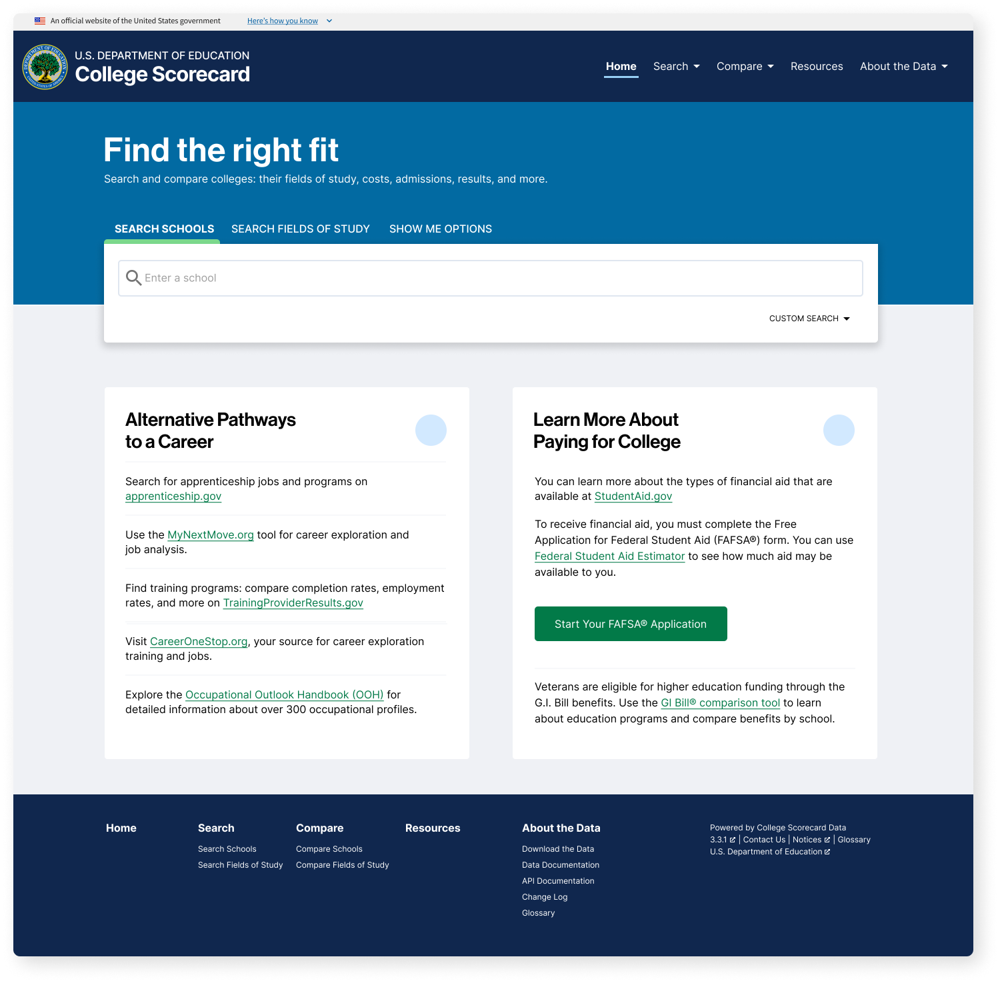
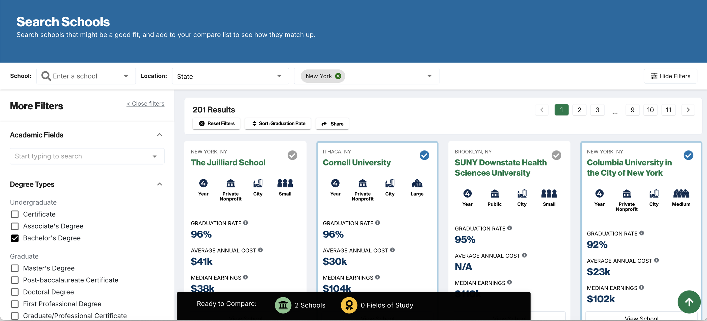
Insight 02
The Compare process is confusing.
Several participants, both students and parents, missed the Compare function entirely. Some noted that the process to add schools to compare was confusing. A few users also noted that the compare icon does not make its function obvious, and that the checkmark could be mistaken as a verified symbol.
Insight 03
Students are confused by the technical definitions in the glossary and tooltips.
The current "glossary" exists as a data repository for developers and data scientists to access the data. Several participants found this glossary and were confused by the long definitions for terms like "Median Earnings" and "Average Annual Cost", especially the time ranges presented for the data.
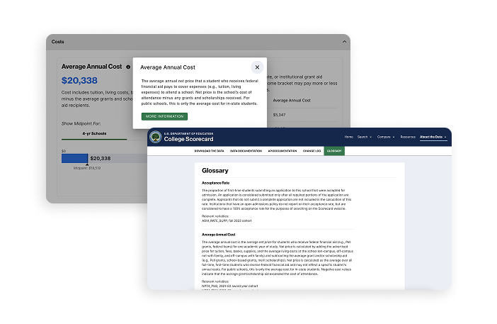
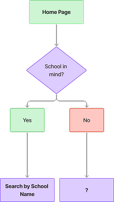
Insight 04
Some students do not have a specific college in mind.
The key entry point into the site is the search bar, where a student must either search for a specific school or field of study. Several participants, early-stage students (9th–10th graders), did not have a specific college in mind to search for, and did not know where else to start. Late-stage students (11th–12th graders) preferred direct search. The single search-bar entry point only served one user type effectively.
Recommendations
I worked with the Product Manager and UX Researcher on my team to create a level of effort analysis and present the findings and following recommendations to the client:
01
Homepage Redesign
Redesign the College Scorecard homepage to emphasize the search bar and include additional information above the external links about how to use College Scorecard and the scope of its offerings.
02
Redesign Compare Schools Workflow
Redesign the compare button throughout the site and fix accessibility issues. Rethink the entire "Compare Schools" workflow to be more intuitive and apparent for users.
03
Plain Language Glossary Feature
Create a plain language glossary and definitions that are more accessible to high school students and parents. Use plain language for key metrics on the consumer website and create plain language tooltips. Rename the current "Glossary" to Data Definitions.
Homepage Redesign
I compiled analytics showing high bounce rates and findings from user research sessions with students that didn't know where to start when using the site, or found the existing homepage to look outdated.
I presented this as a business problem, not just a design preference. I framed the homepage as a foundation that would make all the other features more discoverable and effective. The client agreed to tackle the home page as the first phase.
Design Decisions
- Moved external links below the fold despite partner concerns
- Quick-search buttons for exploratory users (added dev complexity but addressed critical user need)
- Plain language throughout (required rewriting DOE-approved content)
- Prominent compare function explanation (initially resisted as "too much text" and making the home page too long)
Design Exploration & Iteration
Design Principles
- Search-First Architecture: Make the search bar the visual and functional center of the page, reflecting user mental models of "I need to find a school."
- Progressive Entry Points: Serve both exploratory and targeted users with clear pathways that respect their journey stage.
- Trust Through Transparency: Emphasize government backing and explain data sources to build credibility with skeptical users.
Wireframe Evolution
Search Bar
- The first area I tackled was modernizing and emphasizing the main search bar. User research participants mentioned the home page looked "outdated" and 2015-esque, so I aimed to modernize it.
- The existing search had a "Show Me Options" tab to search by common filters like "Schools Near Me," "Most People Go In," and "Most People Graduate," as well as degree types. User testing participants liked this functionality, especially for Schools Near Me, but most never found this search as it was hidden behind a tab.
College Scorecard home page before redesign
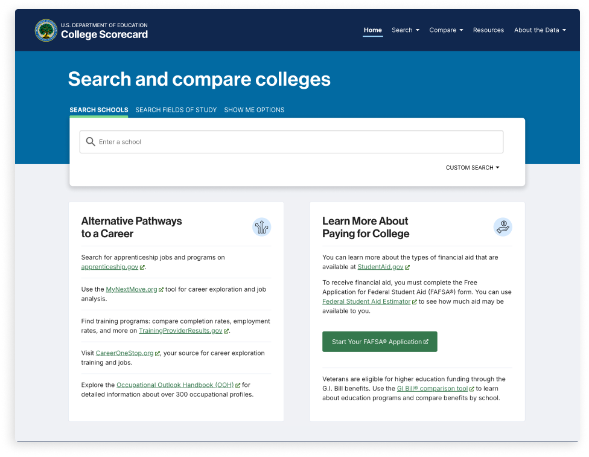
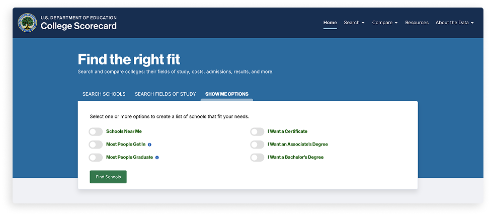
Quick Search
I continued explorations for the updated search bar by adding "quick search" buttons for these filters on the main home page so they were visible immediately. I also experimented with updating the colors of the page, drawing more attention to the search bar by removing the white box around it.
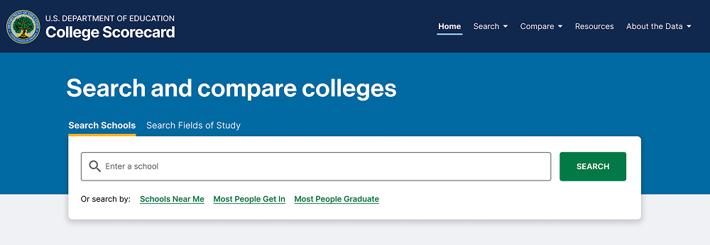
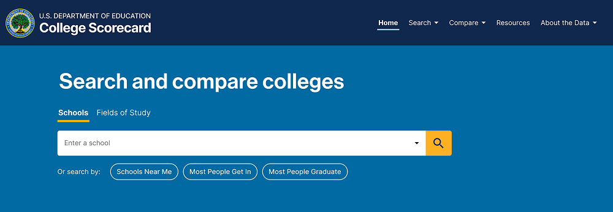
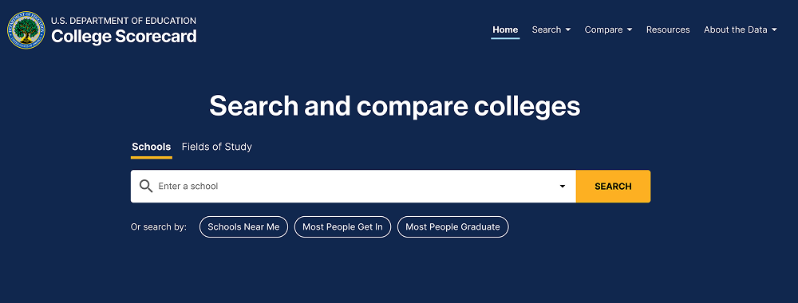
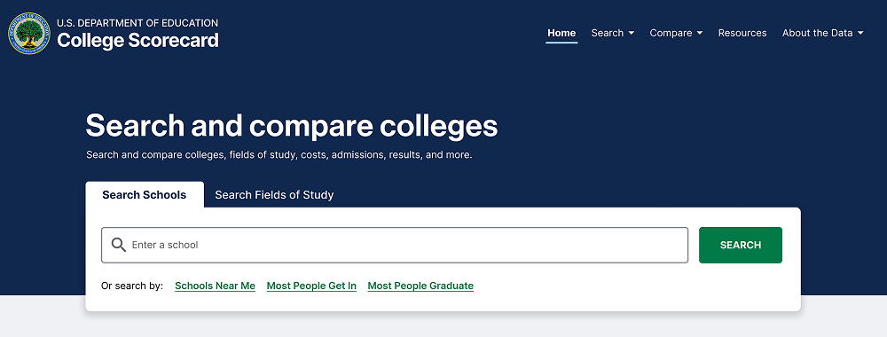
Compare Feature Callout
The compare function explanation went through iterations. Early versions used more technical language ("Add schools to comparison tray"), but testing showed high school students responded better to conversational language:
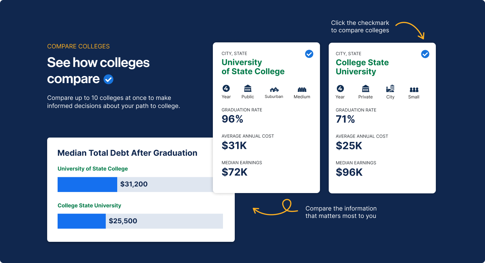
Additional homepage content added visuals of the site, improved SEO, and helped users understand site features. It also had the added benefit of pushing the external links further down the page, decreasing the number of users that immediately clicked out of the site.
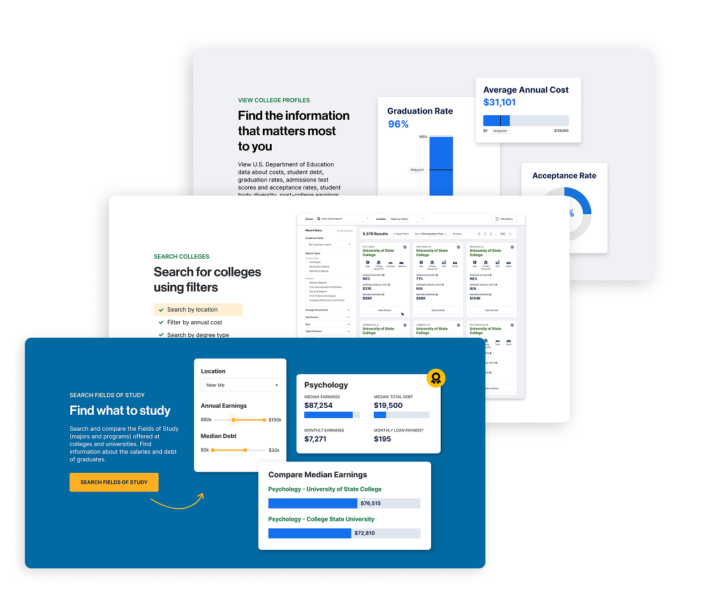
Final Design Solution
College Scorecard is a federal tool serving over 12 million annual users: students, parents, and counselors making critical higher education decisions. When I joined the project, the platform suffered from fundamental usability issues that prevented users from accessing vital comparison data and features.
The Department of Education tasked my team at RTI International with identifying these barriers through comprehensive user research and redesigning the experience to better serve students at every stage of their college search journey.
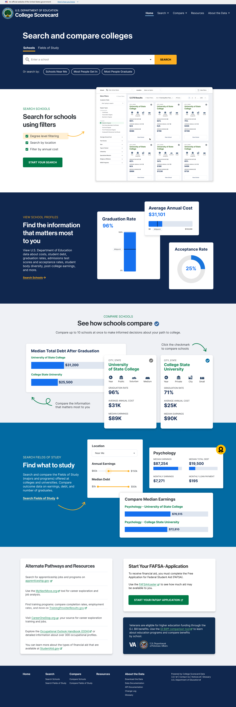
Key Changes
- Increased search bar size and moved to visual center
- Quick-search buttons for common patterns (Schools Near Me, Most People Graduate)
- Compare feature explanation with visual demonstration
- Callouts of government sources to indicate trustworthy data
- External links moved below fold but still accessible
- SEO-optimized content explaining site features and unique data
Mobile Mockups
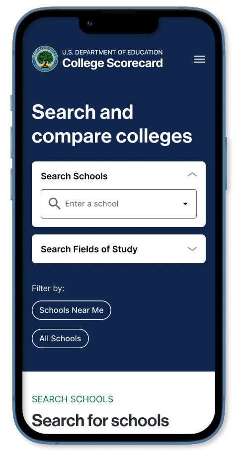
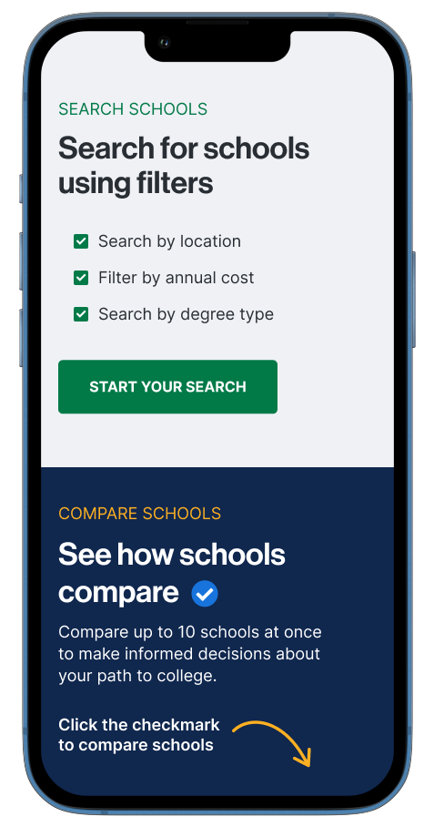
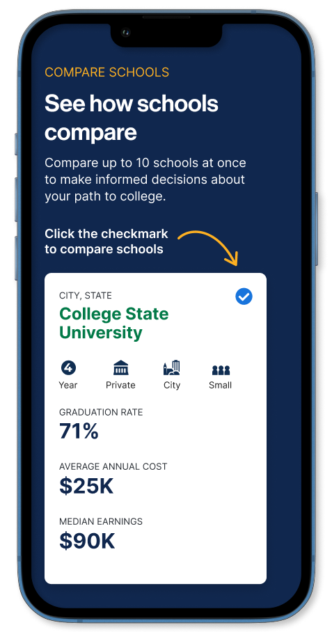
Testing and Iteration
Validation Testing Approach
After client approval, I conducted additional validation testing with five high school students, comparing the original homepage with high-fidelity prototypes of the redesign.
Sessions structure: 30-minute remote sessions via Zoom where students completed realistic tasks on both versions, thinking aloud throughout.
Key Findings
Participants had overall positive reactions to the redesigned College Scorecard homepage and preferred the redesigned option over the existing version of the homepage. I observed and documented:
What Worked:
- Search or "Schools Near Me" button were the first action for 4 of 5 exploratory users
- Compare feature explanation improved understanding of the feature
- Students described redesign as "more modern," "trustworthy," and "easier to understand"
- Preference for the redesigned homepage because of the addition of images and explanations of the site's features
What Needed Refinement:
- "Most People Get In" button confused users ("Get in where? What does this mean?")
- Mobile quick-search buttons felt cramped on smaller screens
Final Refinements
Based on validation findings, I made targeted refinements:
- Removed "Most People Get In" button, adding option to reintroduce alternative buttons based on post-launch analytics
- Adjusted mobile button layout to single-column stack for better touch targets
Launch
The redesigned homepage was launched in January 2025.
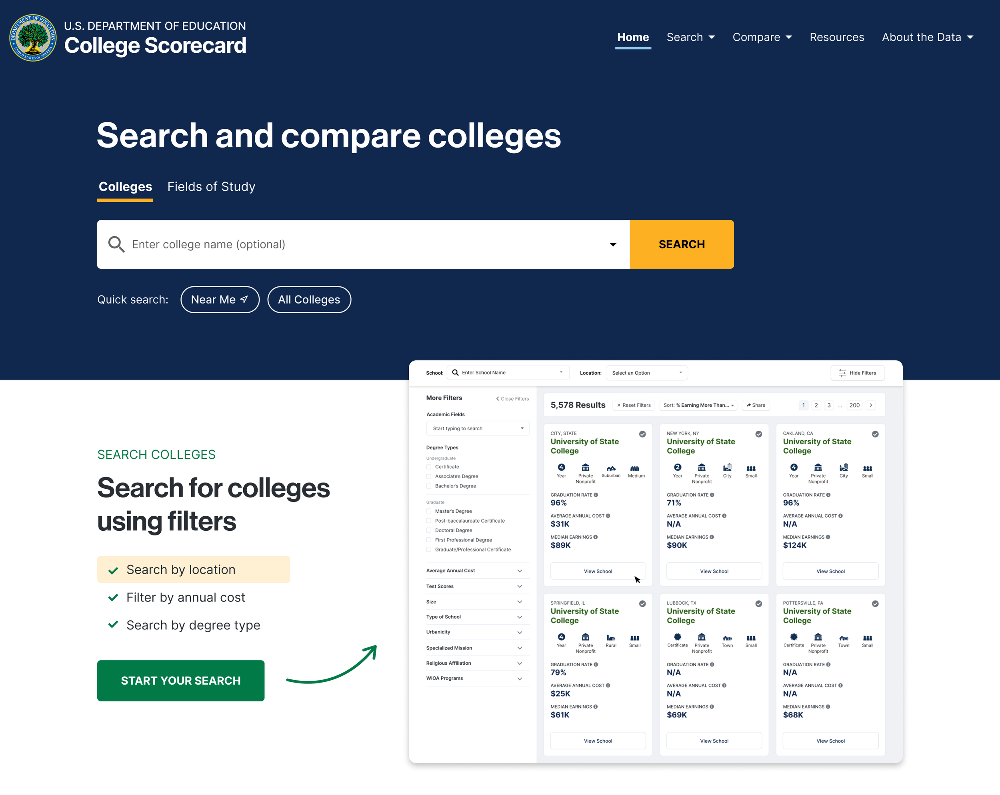
Outcome & Impact
User Experience Improvements
| Metric | Before | After | Improvement |
|---|---|---|---|
| Homepage-to-search conversion | 38% | 51% | +34% |
| Time to first search | 47 seconds | 23 seconds | -51% |
| Time to add first school to compare | 3.2 minutes | 1.8 minutes | -44% |
| Overall bounce rate | 62% | 47% | -24% |
Business Impact
- Decreased support tickets in first 90 days after launch
- Influenced budget allocation for continued UX improvements
Organizational Impact
- Established user research protocols across internal team
- Migrated design project from Adobe XD to Figma
Key Learnings
Go back to the data
Federal projects involve numerous stakeholders with competing priorities. I learned that presenting user research data and analytics early and often was the most effective way to build consensus and move projects forward.
Accessibility compliance improves design for everyone
Rather than treating accessibility as a checkbox, I found that WCAG requirements pushed me to create clearer visual hierarchies, more readable typography, and better keyboard navigation, improvements that benefited all users.
What I'd Do Differently
Earlier Stakeholder Alignment on Success Metrics
We didn't establish clear success metrics with the DoE until after design approval. Next time, I'd define and agree on success metrics during discovery phase to ensure alignment throughout the project.
Deeper Integration Planning Between Phases
The homepage redesign created expectations that we had to backfill in later phases (glossary, compare function). I'd spend more time upfront planning how phases connect and set appropriate user expectations.
Reflection
How This Project Changed My Approach
This project fundamentally shifted how I think about product design in complex organizational environments. I learned that design leadership isn't just about creating great solutions. It's about building consensus, navigating constraints, and using data to drive strategic decisions.
The experience also deepened my appreciation for designing with real consequences. On some sites or applications, poor UX is annoying, but poor UX on a college search site like College Scorecard could lead to life-changing decisions based on incomplete information. That responsibility drives my commitment to evidence-based design and continuous improvement.